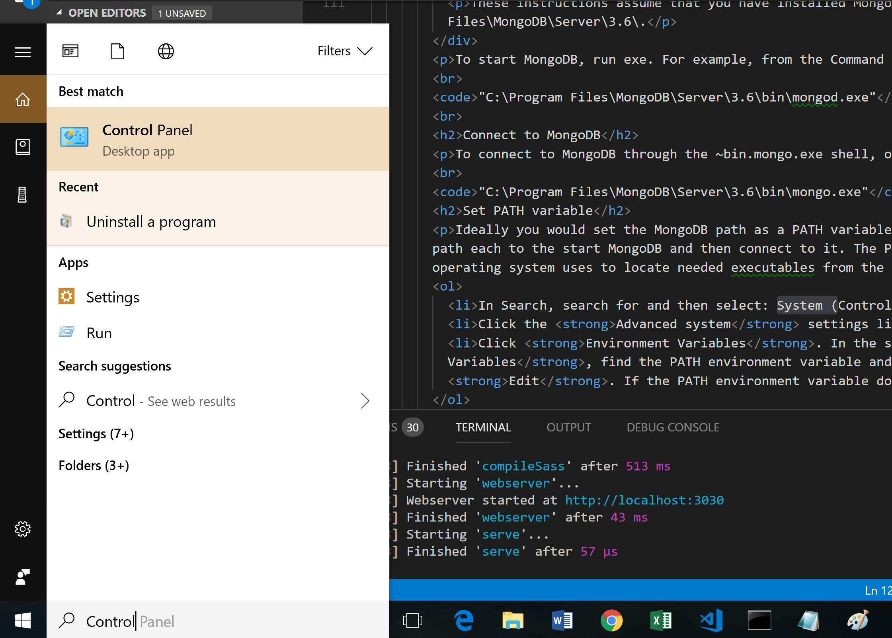
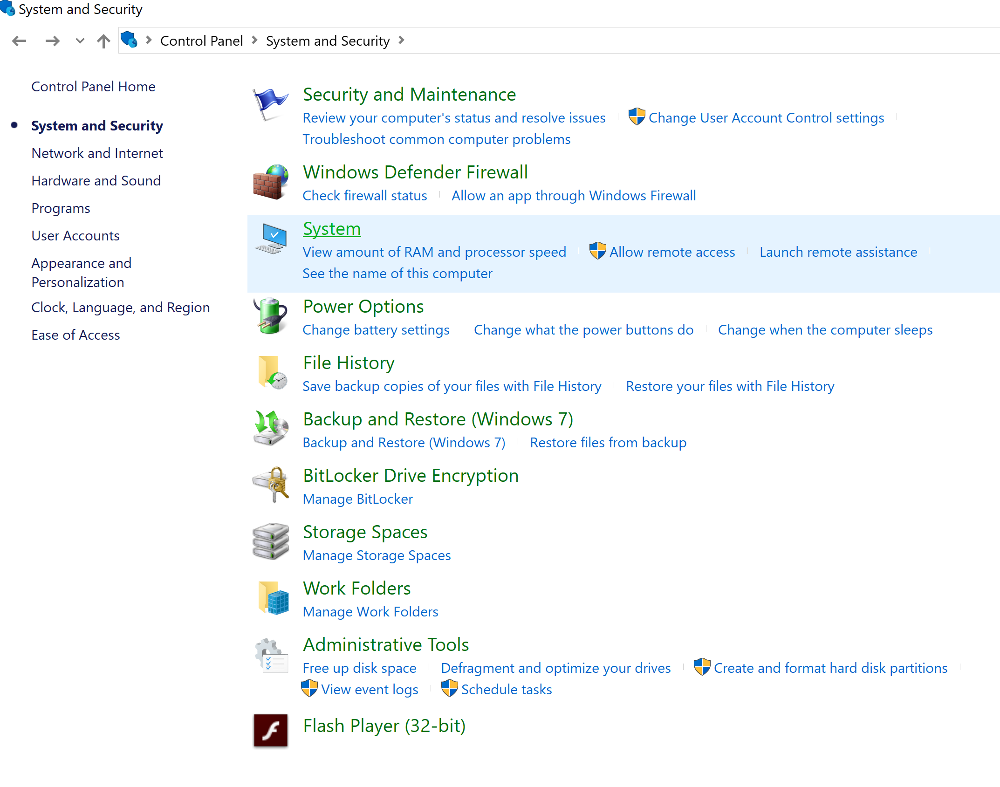
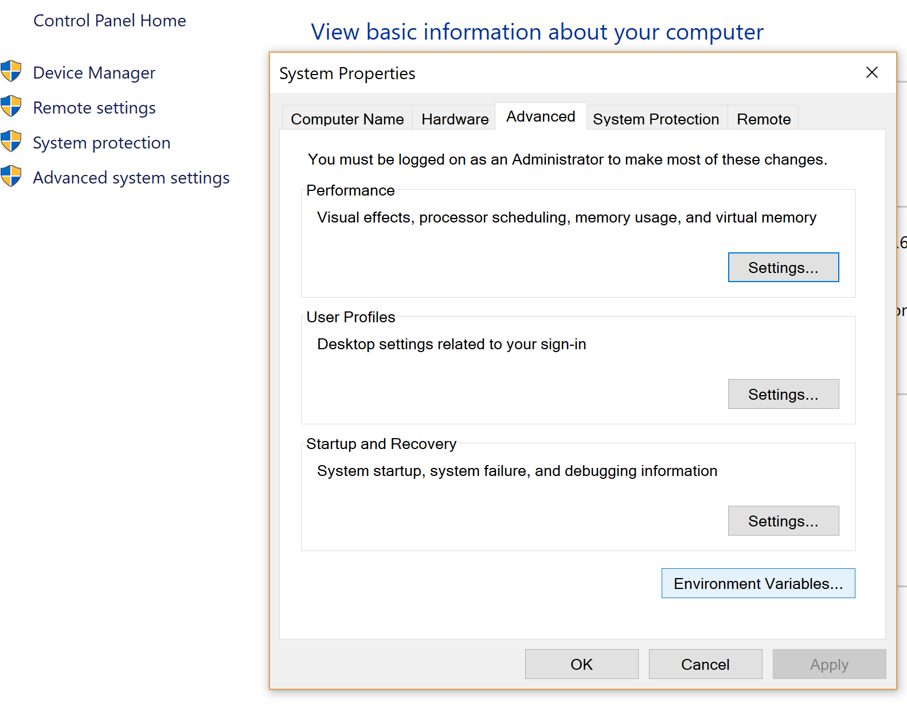
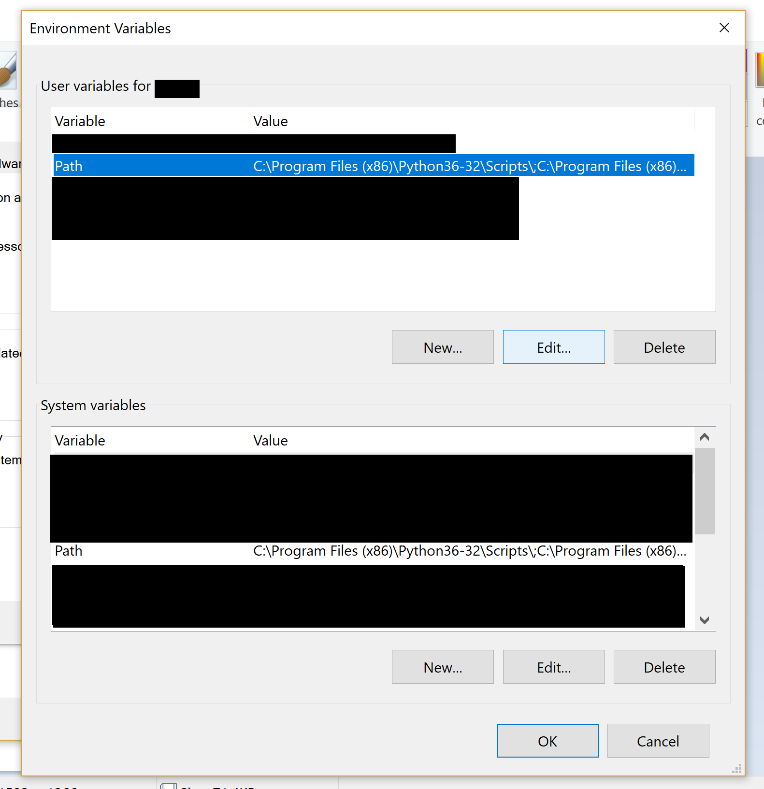
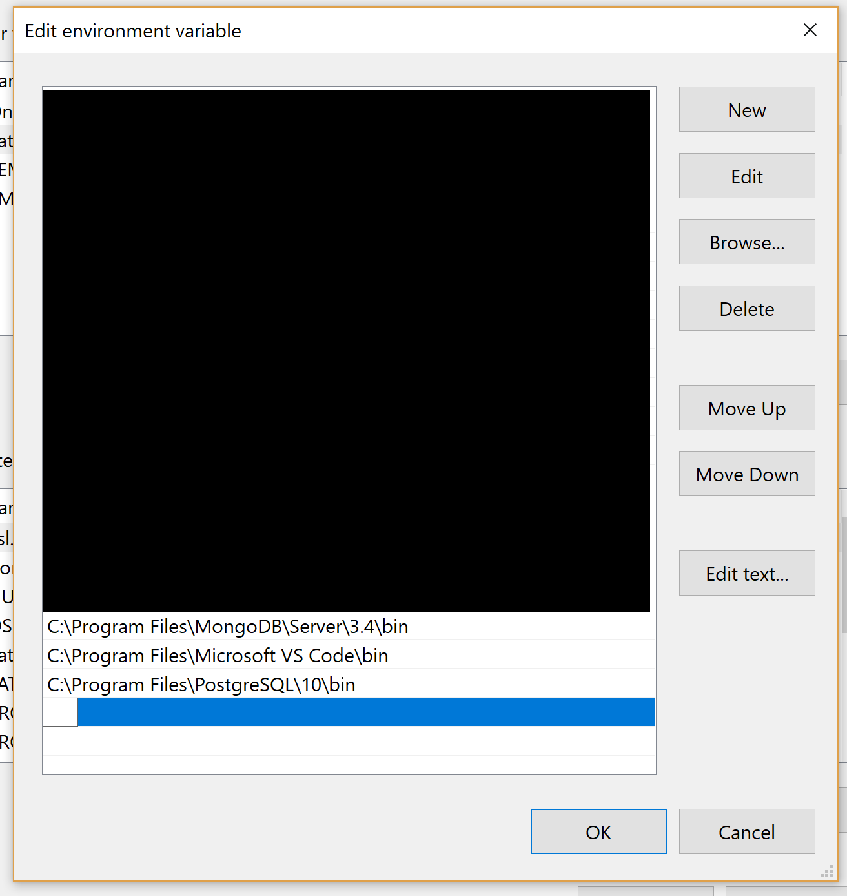

MongoDB setup on Windows
Download MongoDB Installer
- Vist the MongoDB Download Page: https://www.mongodb.com/download-center?jmp=nav#community
- Go to the Community Server section and make sure you are on the Windows selector.
- Click the download button
- Once the installer pops up just click through it. Select the complete/default option (just do not click to customs option).
- If you get a user control prompt just let it through
Set up the MongoDB environment.
MongoDB requires a data directory to store all data. MongoDB’s default data directory path is the absolute path \data\db on the drive from which you start MongoDB. Create this folder by running the following command in a Command Prompt
md \data\db
Start MongoDB
NOTE:
These instructions assume that you have installed MongoDB to C:\Program Files\MongoDB\Server\3.6\.
To start MongoDB, run exe. For example, from the Command Prompt
"C:\Program Files\MongoDB\Server\3.6\bin\mongod.exe"
Connect to MongoDB
To connect to MongoDB through the ~bin.mongo.exe shell, open another Command Prompt.
"C:\Program Files\MongoDB\Server\3.6\bin\mongo.exe"
Set PATH variable
Ideally you would set the MongoDB path as a PATH variable to not have to insert the absolute path each to the start MongoDB and then connect to it. The PATH is the system variable that your operating system uses to locate needed executables from the command line or Terminal window.
- In Search, search for Control Panel and then select: System
- Click the Advanced system settings link.
- Click Environment Variables. In the section System Variables, find the PATH environment variable and select it. Click Edit. If the PATH environment variable does not exist, click New.
- In the Edit System Variable (or New System Variable) window, specify the value of the PATH environment variable. Click OK. Close all remaining windows by clicking OK.
- Reopen Command prompt window, and run your MongoDB code.
Search for Control Panel

Click System

Then Advanced Settings. May see a pop up. Look for environment variables and click that.

Find the PATH environment variable and select it. Click Edit.

If the PATH environment variable does not exist, click New.
